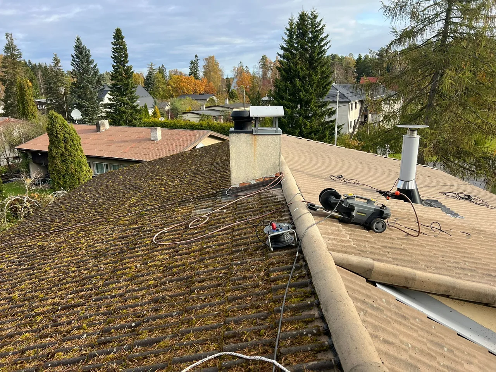

Katuse pesu ja hooldus Tallinnas
Tehtud töö näide katuse puhastamisest ja seisukorra kontrollist.
See tehtud töö näitab, kuidas katuse seisukorda hinnatakse, pind ohutult puhastatakse ning rennid, läbiviigud ja võimalikud paranduskohad üle vaadatakse.

Töö kirjeldus
Katuse pesu ja hooldus aitab pikendada katuse eluiga ning märgata probleeme enne suuremat remonti. See on oluline eriti siis, kui katusele koguneb mustus, sammal või rennid ei juhi vett korralikult ära.
Lähteolukord
Katusepinnale kogunenud mustus ja ummistunud vee liikumisteed võivad mõjutada nii katust, fassaadi kui ka vihmaveesüsteemi. Väikesed probleemid võivad hiljem tekitada suurema remondivajaduse.
Lahendus
Töö käigus puhastatakse katus vastavalt katusekatte seisukorrale, vaadatakse üle nähtavad läbiviigud ja rennid ning antakse soovitused edasiseks hoolduseks või paranduseks.
Miks see on oluline?
Sellised tehtud tööde kirjeldused aitavad kliendil aru saada, millist tööjärjekorda ja ettevalmistust sarnane objekt vajab. Fotod ja tööetappide kirjeldused aitavad hinnata soovitud tulemust ning planeerida oma objekti töid.
Katuse pesu ja hoolduse töö käik
Katuse pesu Tallinnas on hooldustöö, mille eesmärk on eemaldada mustus, sammal, lehed ja muu kogunenud sade enne, kui need hakkavad mõjutama katusekatte eluiga. Katuse hooldus aitab märgata probleeme varakult: ummistunud rennid, läbiviikude ümbrused, lahtised kinnitused ja niiskuskohad võivad hiljem põhjustada suurema remondi vajaduse. Selle tehtud töö puhul keskendusime katuse puhastusele ja nähtavate riskikohtade ülevaatusele.
Tööde planeerimisel arvestame katusekatte tüübi, kaldenurga, ligipääsu ja ohutusega. Iga katust ei pesta sama surve või meetodiga, sest liiga tugev surve võib kahjustada katusekatet või tihendeid. Valime puhastusviisi materjali ja seisukorra järgi, kontrollime vihmavee liikumist ning ütleme ausalt, kas piisab hooldusest või tuleks kavandada remont.
Mida klient sarnase töö pakkumiseks saata võiks?
Katuse pesu hinnapäringusse tasub lisada fotod katusest, rennidest, ligipääsust ja hoone kõrgusest. Kui on teada katusekatte materjal, näiteks plekk, eterniit, kivi või bituumen, tuleks see kindlasti kirja panna. Samuti aitab pakkumist täpsustada info selle kohta, kas vaja on ainult katuse puhastust, rennide puhastust, katuse hooldust, samblatõrjet või ka parandustöid.
See leht kirjeldab konkreetset tehtud tööd. Üldise teenuse jaoks on tähtsamad lehed katusetööd ja hooajalise ohutuse vaatest ka lumetööd. Katuse hoolduse vajadus sõltub kattematerjalist, mustusest ja katuse seisukorrast.
Tehtud töö tulemus
Fotol on meie katuse pesu ja hoolduse tulemus Tallinnas. Enne puhastamist hindame kattematerjali seisukorda ja valime sellele sobiva töövõtte.
Korduma kippuv küsimus
Kas katuse pesu sisaldab ka remonti?
Katuse pesu on hooldustöö. Remonditööd hinnatakse eraldi, kui ülevaatusel ilmneb kahjustusi.